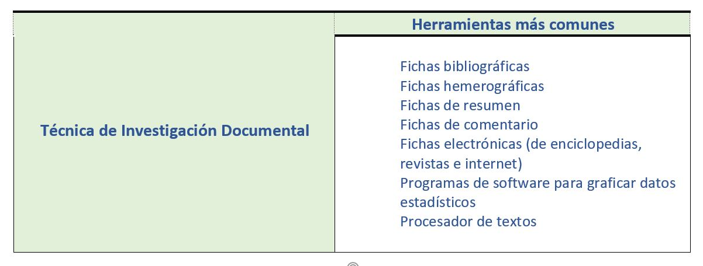

La Técnica Documental se realiza consultando cualquier fuente de información escrita o testimonio gráfico o visual que proporcione datos sobre el tema (libros, periódicos, censos, encuestas, pinturas, fotografías, audios, videos, etc.), es ampliamente utilizada para las investigaciones Históricas. De igual forma, se recurre a la técnica documental para fundamentar los planteamientos en una investigación de campo.
A través de internet es posible acceder a muchísima información documental que según su contenido pueden ser Libros, Revistas, Artículos científicos, Artículos de divulgación, Informes de investigación, Reseñas, Compilaciones, Actas de congreso, Tesis, Bibliografías, Revisiones, Crónicas, Biografías, Enciclopedias, Tesauros, Clasificaciones, Boletines oficiales, Atlas, Memorias, Anuarios, Censos, Cifras, Redes Sociales, Medios de comunicación, Observatorios, Normas, Estándares, Legislación, Marcas, Patentes, Cartografías, Localizaciones, Catálogos, Ensayos, Software, etc.
La utilidad de las fuentes de información documental está determinada por la respuesta a la necesidad de información de los usuarios relativos a un tema en particular. Nos dicen ¿para qué? ¿qué? ¿cómo?, nos sirven para la elaboración del marco teórico y organización de la información.
De acuerdo con López-Carreño (2017), las fuentes de información documental pueden clasificarse dependiendo de la perspectiva desde la que se traten:
- Según tipo o necesidad de información (Bibliográficas, Terminológicas, Institucionales, Estadísticas, Sociales, Normativas, Técnicas, Históricas, Geográficas, Comerciales).
- Según el soporte (fuentes impresas y fuentes en línea)
- Según la accesibilidad (fuentes inmediatas, fuentes mediatas y fuentes grises)
- Según nivel de información (Primarias, Secundarias, Terciarias y complementarias.
- De acuerdo al modo de acceso (Abierto o Libre, Restringido, Híbrido o Mixto),
- Según el contenedor que almacena los contenidos para su localización y recuperación (bases de datos, directorios, índices, portales, repositorios, bibliotecas virtuales, hemerotecas virtuales, motores de búsqueda, bancos wikis o blogs).
- Según la cobertura geográfica (Internacional, Nacional, Regional, Local).
.
Para recopilar la información extraída de las diversas fuentes, se utilizan varias herramientas como:

.
Aquellos documentos que proporcionan información nueva y original, no ha sido filtrada, interpretada, no sufren proceso de transformación y son producto de una investigación o una actividad eminentemente creativa, como un libro, una revista científica, tesis, actas de congresos, documentos oficiales, patentes, un post de un blog, un vídeo, una encuesta.
Aquellas que resultan del análisis y clasificación de documentos primarios. Estas fuentes amplían el contenido de la información de las fuentes primarias, nos referencian a dónde encontrar información, como una bibliografía, resúmenes, un directorio, diccionarios, enciclopedias, atlas, manuales, etc.
Aquellos que someten a revisión, recopilación, organización los materiales primarios y secundarios como un índice bibliográfico: Directorios de directorios, Directorios de Bibliotecas,
Pueden ser Revistas científicas y divulgativas, Libros (manuales, monografías o de texto), Artículos, Actas de congreso, Tesis, Bibliografías, Informes de Investigación, Periódicos.
Información de vocabulario propio de una ciencia, técnica o arte: Diccionarios, Enciclopedias, Tesauros, Taxonomías, Clasificaciones.
Información proveniente de instituciones públicas o privadas como lo son Grupos, Consejos y Academias de investigación Científica, Asociaciones y Fundaciones: Boletines oficiales, Memorias, Informes, Actas.
Orientadas al recuento de un hecho o circunstancia: Anuarios, Datos/Cifras, Censos.
Para la interacción de los individuos: Medios de comunicación, Redes sociales, Observatorios, Estudios.
Ofrecen información de disposiciones, trámites administrativos, jurídicos y legislativos: Normas, Legislación, Jurisprudencia.
De apoyo y salvaguarda de la actividad intelectual e industrial: Marcas, Patentes, Diseños.
Otorgan información retrospectiva: Crónicas, Cronológicas, Biográficas.
Otorgan información espacial y de posicionamiento: Atlas, Cartografías, Itinerarios, Localizaciones.
Atienden la esfera comercial desde el punto de vista del consumidor: Registros, Ferias/Festivales, Catálogos, Tiendas en línea.
Sin restricciones de registro o suscripción. Puede ser Inmediato o diferido.
Aquellas que requieren suscripción así como una identificación para su acceso.
Páginas Web de carácter colaborativo con información específica de un tema, con una estructura cronológica que se actualiza regularmente.
Organizan y distribuyen la información que se produce en la Red. Pueden ser buscadores generales (Google, Bing, Yahoo, Ask, etc.) o especializados (SCIELO, Dialnet, Google Académico, BASE, WorldWideScience, etc.)
Son espacios virtuales donde se deposita documentación científica de todo tipo y en formatos distintos (vídeos, materiales, etc.). Pueden ser temáticos, multidisciplinarios, institucionales o de objetos de aprendizaje.
Es una biblioteca digital que se especializa en periódicos, revistas y otras publicaciones periódicas. Se puede tener acceso a documentos de hace varios cientos de años.
Es un espacio virtual con una colección en línea de objetos digitales organizados, que se ponen a disposición de una manera coherente para un grupo de usuarios definidos. Disponen de mecanismos de conservación y preservación.
Es una plataforma basada en la Web que recopila y da acceso a información de diferentes fuentes relacionadas con un servicio o producto. Incluye foros, enlaces webs, aplicaciones, documentos, entre otros elementos.
Grandes cantidades de Información relacionada, estructurada y almacenada de manera sistemática. Es una especie de biblioteca donde la información está estructurada en tablas para su almacenamiento.
Es un sitio en Internet donde se enlistan de manera organizada páginas, datos, imágenes o lugares de la red. Están estructurados en categorías y subcategorías.
Es un directorio de paginas web ordenadas según criterios, utilizado para fines de orientación.